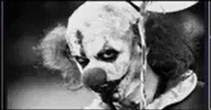
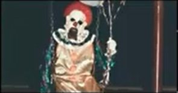
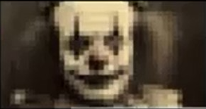
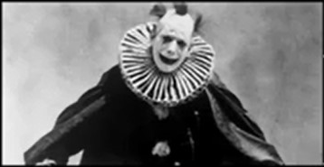

CLOWNS!

KO'RSATMALAR!
9 yoshida sirkda yoqolib qolgan. 14 yoshida birinchi marta ruhiy kasalxonaga tushgan. Oqrtirilgan clown niqobi bilan tunlari ko'chalarda paydo bo'ladi

KO'RSATMALAR!
Bolaligida otasi uni podvalga qamab qo'ygan. 16 yoshida maktabdan g'oyib bolgan va oradan 3 yil otib boshqa ism bilan topilgan

KO'RSATMALAR!
13 yoshida akasini g'oyib bo'lishiga gumon qilingan. Oshandan beri faqat clown kiyimida yuradi va odamlarni juda qattiq yomon ko'radi!

KO'RSATMALAR!
Tunda eski attraksion parkida ko'rinadi. Guvohlarning aytishicha kulgusi uzoqdan eshitiladi. lekin ozi kameraga hech qachon tushmagan
KO'RSATMALAR!
Bir vaqtlar bolalar bayramida animator bo'lib ishlagan. Keyinchalik ruhiy holat buzilib, tashlandiq parkda yashay boshlagan